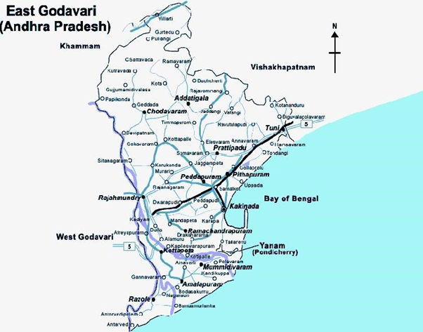

SRIKUKALAM DISTRICT
ANDHRA PRADESH
Srikakulam District is one of the nine coastal districts of Andhra Pradesh, is a regular victim of multiple disasters and this district was badly affected by all major natural disasters time to time since independent era.

VIJAYANAGARAM DISTRICT
ANDHRA PRADESH
Vizianagaram District, one of the nine coastal districts of Andhra Pradesh, is a regular victim of multiple disasters and this district was badly affected by all major natural disasters time to time since independent era. Hazards can be single, sequential or combined in their origin and effects.

VISHAKAPATNAM DISTRICT
ANDHRA PRADESH
Vishakapatnam District, one of the nine coastal districts of Andhra Pradesh, is a regular victim of multiple disasters and this district was badly affected by all major natural disasters time to time since independent era. Hazards can be single, sequential or combined in their origin and effects.

EASTGODAVARI DISTRICT
ANDHRA PRADESH
East Godavari District, one of the nine coastal districts of Andhra Pradesh, is a regular victim of multiple disasters and this district was badly affected by all major natural disasters time to time since independent era. Hazards can be single, sequential or combined in their origin and effects.

WESTGODAVARI DISTRICT
ANDHRA PRADESH
West Godavari District, one of the nine coastal districts of Andhra Pradesh, is a regular victim of multiple disasters and this district was badly affected by all major natural disasters time to time since independent era.

KRISHNA DISTRICT
ANDHRA PRADESH
Krishna district is a district in the coastal Andhra Region in Indian state of Andhra Pradesh, with Machilipatnam as its administrative headquarters. It is surrounded on the East by Bay of Bengal

GUNTUR DISTRICT
ANDHRA PRADESH
Guntur District, one of the nine coastal districts of Andhra Pradesh, is a regular victim of multiple disasters and this district was badly affected by all major natural disasters time to time since independent era.

PRAKASAM DISTRICT
ANDHRA PRADESH
Prakasam District, one of the nine coastal districts of Andhra Pradesh, is a regular victim of multiple disasters and this district was badly affected by all major natural disasters time to time since independent era.

NELLORE DISTRICT
ANDHRA PRADESH
Nellore District situated in the South Eastern portion of the state with a costal length of 163 KM
bounded by Bay of Bengal on the East.

CHITTOOR DISTRICT
ANDHRA PRADESH
Chittoor District, one of the nine coastal districts of Andhra Pradesh, is a regular victim of multiple disasters and this district was badly affected by all major natural disasters time to time since independent era. Hazards can be single, sequential or combined in their origin and effects.

KADAPA DISTRICT
ANDHRA PRADESH
There is a paradigm shift in Disaster Management approach from the earlier
focus of response and relief to prevention and preparedness. It is certainly possible
to reduce the impact of Disasters by evolving appropriate preparedness, mitigation
and response plans.

KURNOOL DISTRICT
ANDHRA PRADESH
Cyclone, Floods, drought and heat wave are the major natural hazards prominent in the district. Real-time monitoring and early warning systems to be put in place and ensure disaster management awareness and evacuation strategies are common knowledge in the disaster-prone mandals.

ANANTHAPURAM DISTRICT
ANDHRA PRADESH
Ananthapuramu got its name from ‘Anaatasagaram’, a big tank, which means “Endless Ocean”. The villages of Anaantasagaram and Bukkarayasamudram were constructed by Anantaras Chilkkavodeya, the minister of Bukka-I, a Vijayanagar ruler.